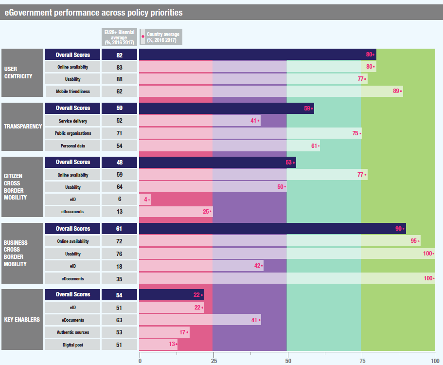

Digital Government Factsheet 2019
The United Kingdom
Table of Contents
Digital Government Highlights 6
Digital Government Political Communications 7
Digital Government Legislation 17
Digital Government Governance 20
Digital Government Infrastructure 27
Digital Government Services for Citizens 34
Digital Government Services for Businesses 45
Country Profile
Basic data
Population: 66 273 576 (2018)
GDP at market prices: 2 393 692.8 million euro
GDP per inhabitant in PPS (Purchasing Power Standard EU 28=100): 105 (2017)
GDP growth rate: 1.4% (2018)
Inflation rate: 1.9% (2019)
Unemployment rate: 4% (2018)
General government gross debt (Percentage of GDP): 86.3% (2018)
General government deficit/surplus (Percentage of GDP): -1.8% (2018)
Area: 247 763 km²
Capital city: London
Official EU language: English
Currency: GBP
Source: Eurostat (last update: 15 March 2019)
Digital Government Indicators
The following graphs present data for the latest Generic Information Society Indicators for the UK compared to the EU average. Statistical indicators in this section reflect those of Eurostat at the time the Edition is being prepared.
Percentage of individuals using the Internet for interacting with public authorities in the UK | Percentage of individuals using the Internet for obtaining information from public authorities in the UK |
Percentage of individuals using the Internet for downloading official forms from public authorities in the UK | Percentage of individuals using the Internet for sending filled forms to public authorities in the UK |
Digital Government State of Play
The graph below is the result of the latest eGovernment Benchmark report, which monitors the development of eGovernment in Europe, based on specific indicators. These indicators are clustered within four main top-level benchmarks:
User Centricity – indicates to what extent (information about) a service is provided online and how this is perceived.
Transparency – indicates to what extent governments are transparent regarding: i) their own responsibilities and performance, ii) the process of service delivery and iii) personal data involved.
Cross-Border Mobility – indicates to what extent EU citizens and businesses can use online services in another country.
Key Enablers – indicates the extent to which 5 technical pre-conditions are available online. There are: Electronic Identification (eID), Electronic documents (eDocuments), Authoritative Sources, and Digital Post. Digital Post refers to the possibility that governments communicate electronically-only with citizens or entrepreneurs through e.g. personal mailboxes or other digital mail solutions.
These top-level benchmarks are measured using a life-events (e.g. mystery shopping) approach. Eight life events are included in the overall eGovernment performance score. Four of these life events were measured in 2013, 2015 and 2017 and the other four were measured in 2012, 2014, 2016, and again in 2018. The life events measured in 2017 were Regular business operations, Moving, Owning and driving a car and Starting a small claims procedure. The life events measured in 2018 are Business start-up, Losing and finding a job, Family life and Studying.

Source: eGovernment Benchmark Report 2018 Country Factsheets
Digital Government Highlights
Digital Government Political Communications
Regarding political communications on emerging technologies, the Government Digital Service (GDS) is conducting a new Artificial Intelligence review in collaboration with the Office of Artificial Intelligence. The review will look at how government can use Artificial Intelligence, automation and data in new ways to drive public sector productivity and produce wider economic benefits.
A collaboration between GDS, the Office for National Statistics and the Government Office for Science was established to form the Government Data Science Partnership.
An Innovation Strategy was published in Spring 2019 that focused on the potential of emerging technologies to deliver public sector transformation.
In May 2018, the GDS published the GovTech Catalyst which aimed to support public sector organisations to find innovative solutions to operational service and policy delivery challenges.
Digital Government Legislation
Digital Government Governance
On 19 February 2019, the Department of Health and Social Care (DHSC) announced the creation of NHSX, a joint unit between DHSC, NHS England and NHS Improvement, for digital, data and technology.
Digital Government Infrastructure
In March 2018, the data.gov.uk site was re-designed and the Find open data service was launched. It aimed to help people to find and use open government data and supporting government publishers to maintain data.
In April 2018, the GDS team revised the Open Standards Principles to make it easier for departments to adopt open standards. The updated version of the principles clarified several important points and uses clearer language.
Digital Government Services for Citizens and Businesses
In 2018, HM Revenue & Customs took a major step forward toward the eventual goal of introducing the Making Tax Digital for VAT. This digital service is a key part of the government’s plans to make it easier for individuals and businesses to get their taxes right and stay on top of their financial affairs.
The Government implemented the Set up a business service which aims to register a business online. The setting up depends on the type of business.
Digital Government Political Communications
Specific political communications on digital government
New Government Transformation Strategy
- Transforming Whole Citizen-Facing Services - to continue to improve the experience for citizens, businesses and users within the public sector;
- Full Department Transformation - affecting complete government organisations to deliver policy objectives in a flexible way, improve citizen service across channels and improve efficiency;
- Internal Government Transformation - which might not directly change citizen-facing services, but which is vital for government to collaborate better and deliver digitally-enabled change more effectively.
The aim of this strategy is to transform the relationship between citizens and the state - putting more power in the hands of citizens and being more responsive to their needs. It is structured around five objectives:
- Delivering world-class digital services and transforming the way government operates in a modern and efficient way;
- Growing the right people, skills and culture;
- Building better workplace tools, processes and governance;
- Making better use of data;
- Creating shared platforms to speed up transformation.
The strategy stated clear priorities up to 2020 for each of the five objectives, and in addition includes expectations for government beyond 2020.
The strategy is supported by the Government Digital Service (GDS) which enables and assures government digital initiatives. The GDS’s role is to:
- Set the appropriate challenging standards for government digital technology and support the increased digital capability of government by identifying, curating and sharing best practices.
- Strengthen the digital, data and technology communities across government - setting professional standards and standardising approaches to recruitment, retention, pay and career development.
- Act as a centre of digital expertise (including exploring new ideas and developing prototypes) and make sure this expertise is deployed effectively.
- Build, continually improve and operate products and services that the rest of government can rely on.
- Provide targeted digital, data and technology expertise (from GDS, departments or external sources) to other government organisations as support for critical projects.
- Provide assurance for digital projects through spending controls, service assessments and in collaboration with the Infrastructure and Projects Authority (IPA).
- Connectivity - Building world-class digital infrastructure for the UK;
- Digital skills and inclusion - Giving everyone access to the digital skills they need;
- The digital sectors - Making the UK the best place to start and grow a digital business;
- The wider economy - Helping every British business become a digital business;
- A safe and secure cyberspace - Making the UK the safest place in the world to live and work online;
- Digital Government - Maintaining the UK Government as a world leader in serving its citizens online;
- Data - Unlocking the power of data in the UK economy and improving public confidence in its use.
The strategy for delivery of the Digital Strategy is via the following pillars:
- Science, research and innovation, where they must become a more innovative economy, and do more to commercialise our world leading science base to deliver growth across the UK;
- Skills, where they must help people and businesses to thrive by ensuring everyone has the basic skills needed in a modern economy; by building a new system of Technical Education to benefit the half the population who do not go to university, boosting STEM skills and numeracy, and raising skill levels in lagging areas;
- Infrastructure, where they must upgrade our performance on digital, energy, and transport infrastructure, and must better align central government infrastructure investment with local growth priorities;
- Supporting businesses to start and grow, where they must ensure that businesses across the UK can access the finance and management skills they need to grow; and create the conditions to enable firms to invest for the long term;
- Procurement policy, where strategic government procurement can drive innovation and enable the development of UK supply chains;
- Trade and inward investment policy, where government policy can help boost productivity and growth across our economy including by increasing competition and helping to bring new ways of doing things to the UK;
- Affordable energy and clean growth, where they need to ensure that they both keep costs down for businesses, and secure the economic benefits of the transition to a low carbon economy;
- Sectoral policies, where they must both build on our areas of competitive advantage, and help new sectors to flourish, in many cases challenging existing institutions and incumbents;
- Spreading growth across the country, whether it is investing in key infrastructure projects to unlock growth, increasing skill levels, or backing local innovation strengths, the Industrial Strategy will create a framework to build on the particular strengths of different places and address factors that hold them back;
- Creating the right institutional framework, in some places and sectors there may be missing institutions which they could create, or existing ones they could strengthen: be they local educational institutions, trade associations or financial networks.
Digital Charter
Strategies and policies in the devolved administrations
The devolved administrations of Scotland, Wales and Northern Ireland have their own particular approaches to eGovernment policy.
Scotland
Scotland’s Digital Future Strategy of 2011 outlined the steps required to ensure Scotland is well placed to take full advantage of all the economic, social and environmental opportunities offered by the digital age.
Four themes were defined:
- Connectivity: Scotland's Digital Future: Infrastructure Action Plan outlined the government's commitment to a world-class, future-proofed infrastructure that will deliver digital connectivity across the whole of Scotland by 2020. So far, over GBP 240 million of public sector funding has been committed to taking forward the Infrastructure Action plan.
- Digital Public Services: Scotland’s Digital Future: Delivery of Public Services Strategy provided a framework into which strategies developed by sectors align NHS Scotland; Local Government; and central government, i.e. Scottish Government its agencies and non-departmental bodies including the police and fire services, universities and colleges. A summary of progress on each of the Sectoral Strategies can be found here.
- Digital Economy: the report Scotland's Digital Future - Supporting the Transition to a World-leading Digital Economy: Emerging Findings April 2013 was published on 7 May 2013. The report explored the public sector's approach to promoting Scotland's digital economy and provided initial outputs from the review of business support programmes. On 22 May 2013, an additional GBP 7 million in funding was announced to take forward the recommendations in the report and complement the resources that are already in place within enterprise and skills agencies.
- Participation: the digital participation strategy was laid out in a National Framework for Local Action.
In 2017, the Scottish Government published a study called Realising Scotland's Full Potential in a Digital World: A Digital Strategy for Scotland. It described plans for ensuring that digitisation is at the heart of everything – delivering inclusive economic growth; reform of public services; preparing children for the workplace of the future; tackling inequalities and empowering communities.
Significant progress has been made since 2011:
- The Digital Scotland Superfast Broadband (DSSB) programme achieved its initial target of delivering access to fibre broadband to 85% of premises in Scotland;
- The Community Broadband Scotland (CBS) has helped extend broadband access to over 1 400 premises;
- The percentage of adults using the internet increased from 73% to 82%;
- Broadband access at home amongst social housing tenants increased by 20%.
The 2017 actions aimed to, in general:
- Support digital transformation across the wider economy;
- Support growth in the digital sector;
- Re-design Scotland's digital public services;
- Enable change and innovation through data;
- Transform the public sector;
- Build a digital government;
- Deliver high quality connectivity across the whole of Scotland;
- Build a digitally-skilled nation;
- Promote diversity in digital;
- Support people and communities through social changes; and
- Promote digital inclusion and participation.
Wales
The Digital Wales Strategy is structured around five fundamental objectives:
- Inclusivity: Digital Wales will contribute to making Wales a more inclusive, sustainable and prosperous society. Making sure everyone can enjoy the benefits of technology is a key part of that.
- Skills: Information and communication technology (ICT) skills will be part of children’s education, and technology will be used to improve teaching methods and learning. Beyond schools, the government will ensure that everyone in Wales can acquire the basic skills and confidence to get online and use digital technologies. The government will also help train people in more specialist skills for industry.
- Economy: Digital Wales will support Welsh companies to network with research departments to create and commercialise new digital technologies. Digital Wales will help more Welsh companies to exploit these developments to innovate, grow and access new markets, especially in the creative industries, ICT and tourism sectors.
- Public services: Digital Wales will make more digital public and government services, to foster an easier access for everyone by increasing their efficiency and convenience. Through effective use of technology, citizens will be able to better exploit these services and to maximise the use of resources.
- Infrastructure: To deliver all the benefits of digital technology, the government set the ambitious goal of ensuring that everyone in Wales would have access to Next Generation Broadband (at least 30Mbps) starting from 2015. At the same time, the government actively worked to improve mobile and wireless coverage across the country.
Northern Ireland
The Digital Northern Ireland 2020 (DNI) initiative stands to reap considerable benefits in terms of both economic and social uplift as a result of the advanced communications capability which has been and continues to be deployed. The initiative will focus on the following categories of opportunity:
- Business opportunities in and across various business sectors;
- Community and social opportunities across a range of areas;
- A number of key strategic projects which if realised would significantly enhance Northern Ireland’s position as a Knowledge Economy;
- Opportunities for FDI by significant players across major business areas, including the ICT and digital technology areas.
The Northern Ireland (NI) Digital Economy Action Plan 2013-2014 identified a number of challenges, as well as specific actions in order to tackle them. These are:
- Connected Digital Economy Catapult: Provide a world-class centre of expertise in the digital economy, to support the rapid commercialisation of cutting-edge technologies with the potential to have a global impact.
- Systems – new digital media business systems: Developing visual effects capabilities and work processes to allow audiences to be reached across multiple platforms.
- Value – frictionless commerce: Making it easier for traders and their customers to establish a relationship online.
- Value – valuing and pricing digital assets: Developing ways to agree value and price.
- Data – uses of environmental data: Enabling the commercial exploitation of the rich UK collection of environmental data to provide practical decision support tools for industry - joint programme with resource efficiency team and shown in both areas.
- Data – establishing clean data supply: Continuation of the LinkedGov project.
- Data – digital technologies for health: Enabling companies to understand what impact they could have to help deliver more efficient and effective health systems and to connect with the providers. They may consider the following areas: early diagnosis, prevention and better treatments.
- Places & people – enterprise and employee information systems: Helping businesses to establish secure, resilient and reliable connections with their staff working remotely.
- Places & people – location-based services: Helping businesses to engage with their customers in their ‘here and now’ context.
- Places & people – local media systems: Developing a marketplace for information and services of local interest.
- IC tomorrow: Developing innovation for small digital businesses through a programme of small business support contests.
- Supporting and developing clusters: Developing innovation for small digital businesses through two Launchpad competitions: Creative North-West and Cyber South-West.
Key enablers
Access to public information
Third Open Government National Action Plan
- The UK being the first G7 country to commit to the Open Contracting Data Standard (OCDS) for contracts administered by a central purchasing authority, the Crown Commercial Service. This means that the whole process of awarding public sector contracts – from bidding right through to building – was made public for the first time in 2016;
- Leading the world in creating an open register of beneficial ownership so everyone can see who owns what in Britain. The register went live in 2016;
- The introduction of reusable unique identifiers to the UK’s published government grants data and central procurement data. This represents a step change in how people can monitor how government is spending taxpayers’ money.
The updated version of the third Open Government National Action Plan includes new commitments from each of the devolved administrations: the Northern Ireland Executive, the Scottish Government and the Welsh Government.
eID and Trust Services
Security aspects related to digital government
National Cyber Security Strategy 2016-2021
Internet Safety Strategy
- The introduction of a social media code of practice, transparency reporting and a social media levy;
- Technological solutions to online harms;
- Developing children’s digital literacy;
- Support for parents and carers;
- Adults’ experience of online abuse;
- Young people’s use of online dating websites/applications.
Interconnection of base registries
No political communication was adopted in this field to date.
eProcurement
No political communication was adopted in this field to date.
Domain-specific political communications
Government Digital Inclusion Strategy (December 2014)
The Government Digital Inclusion Strategy set out how government and partners from the public, private and voluntary sectors work together to increase digital inclusion. This means helping people to become capable of using and benefiting from the internet.
In November 2015, the team responsible for this strategy moved to the Department for Culture, Media and Sport (DCMS) from the Cabinet Office’s Government Digital Service, as part of a Machinery of Government change. The team now sits within the Digital Economy Unit. Following the team’s move, the focus has slightly shifted from Digital Inclusion to Digital Engagement. This reflects a reframing of the policy as primarily a motivational engagement issue.
The Digital Engagement Team has been working to develop new delivery priorities and work areas. The Council will replace the current governance structure of the Sub-Group (to represent government departments) and Delivery Board (to represent non-government organisations), combining members from public, private and voluntary sectors and chaired by the Minister for Culture and Digital Economy. The Council will oversee a number of tasks and groups that will tackle various key issues for digital engagement. Areas for focus are still under development but might involve targeted work with particular customer groups or wider work to support and encourage people to engage digitally.
The 2014 actions in the Digital Inclusion strategy were about addressing the barriers that have stopped people going online until now and backing initiatives that will make things better. Key progress to date is listed below:
- An Exemplar Services and Identity Assurance policy paper has been developed by the Government Digital Service. This looks to gauge the level of difficulty of a selection of online tasks that would require digital skills to complete.
- The UK Government through BEIS has been involved in providing support for basic digital skills since 2010, with some GBP 36 million provided to help over 1.5 million individuals gain the basic digital skills needed to allow them to access employment and education opportunities and the wider benefits of being digital.
- Civil Service Learning (CSL) has worked to improve the digital capabilities of civil servants: implemented online digital learning resources free on CSL website, publicised the Digital Friends initiative via the CSL website, and looked to set up a task and finish group with cross civil service representation to populate a renewed digital curriculum.
- Departments have worked hard to ensure their staff have the correct digital capabilities. Across government departments, digital weeks/fortnights have been introduced, along with digital ambassadors and Digital Friends initiatives.
- To date, 91 organisations have signed up to the Digital Inclusion Charter and collaborate with government to deliver the Digital Inclusion Strategy. The Digital Inclusion team has worked with these stakeholders to develop products such as the cross-sector Digital Inclusion Outcomes Framework and initiatives like Digital Friends which promotes informal sharing of basic digital skills. The Digital Engagement team has a coordination role in facilitating multi-sector partnerships. The programme of work is continuously evolving. Departments have been partnering with various organisations to deliver outcomes. DWP, for example, has worked with Barclays Digital Eagles and EE Techy Tea Parties. With government coordination, BT and Barclays have partnered to provide free Wi-Fi to over 70 libraries and community centres.
- Departments have been partnering with various organisations to deliver outcomes. DWP, for example, has worked with Barclays Digital Eagles and EE Techy Tea Parties. Outside government, BT and Barclays have partnered to provide free Wi-Fi to libraries and community centres.
- The definition of ‘basic online skills’ used for 2014 data (the ability to: send and receive emails, use a search engine, browse the internet, and fill out an online application form) has now been revised, re-termed ‘basic digital skills’ and an updated set of measures has been developed. This broader definition of basic digital skills includes five tasks: managing information, communicating, transacting, problem-solving and creating.
- Work has been completed by departments to support SMEs in developing digital skills and knowledge. The ‘Small Business Digital Capability Programme’ was established to help increase digital skills amongst businesses by supporting them to take action and do more online. BEIS published an evidence review of digital support available - ‘Digital Capabilities in SMEs’ - to provide information on types of businesses who are and are not using technologies and the reasons why; the level of eCommerce among SMEs and plans for engaging with digital technology in the future.
- Government is committed to supporting voluntary and community groups to address their organisational needs. For example, it is currently running a GBP 20 million fund to support small to medium sized charities to deliver change and secure and enhance their services. Applicants have been supported to lead the development of change plans and that haven't specified area of focus. However, many organisations are expected to focus on addressing capability needs such as digital.
- Government is also working to increase cross sector volunteering, by encouraging more businesses to allow their staff to volunteer. This will allow charities to access a wide range of professional skills to build their capabilities. Digital is an area that has significant potential, with a number of excellent cross sector partnerships already underway.
- A ‘Digital Inclusion Outcomes Framework’ has been developed by the Digital Inclusion Research Working Group. It is a single, flexible template for benchmarking and tracking digital inclusion in the UK and evaluating digital inclusion activities locally. It aims to evidence the wider economic, health and social benefits of digital inclusion.
Interoperability
The Digital Service Standard and Technology Code of Practice
The Technology Code of Practice and the Digital Service Standard state that understanding user needs is a core requirement of building and running any government digital service.
They state that open standards should be used to increase compatibility with all stakeholders and give users a more consistent experience when using government services online. They also state that using open standards will help service providers becoming locked in to a specific piece of technology or supplier.
The Government Digital Service assures that open standards are used wherever possible through service assessments and the spend controls process.
The Service Standard requires all services to thoroughly “evaluate tools and systems”. Service teams are asked to assess and choose the appropriate technology to meet user and organisation needs. This is assessed in a formal service assessment at alpha, beta and before going live. For example, for a live assessment, service teams will be asked to:
- describe the tech stack changes they made during beta and why
- describe the development toolchain changes they made during beta and why
- explain how they’re continuing to get value for money from the systems they chose and bought at beta
- explain or demonstrate how they’ll check if the service is healthy
- explain the support arrangements that they’ve set up for live
- explain any decisions they’ve outsourced and why they chose to do this
All government documents should be published in an open format (ODF or HTML5) to ensure that proprietary software is not needed to interact with government. All websites must be tested in 11 popular web browsers.
Emerging technologies
Artificial Intelligence review
In 2017, the United Kingdom began conducting a new Artificial Intelligence (AI) review led by GDS, in partnership with the Office of Artificial Intelligence, to look at how government could use artificial intelligence, automation and data in new ways to drive public sector productivity and produce economic benefits. The review included technology background, a summary of opportunities, the challenges for using AI in transport, and recommendations as to how government could support AI in transport.
The Government Data Science Partnership
The Government Data Science Partnership is a collaboration between the Government Digital Service (GDS), the Office for National Statistics (ONS) and the Government Office for Science (Cabinet Office). It was formed to help government realise the potential of data science and to support the development of skills and tools to kickstart greater take-up across departments and agencies (including the Data Science Accelerator).
Data Science Accelerator Programme
Innovation Strategy
GovTech Catalyst
The GovTech Catalyst supports private-sector companies, not-for-profits and social enterprises of all sizes to develop and trial these technologies. It is an easy way to help them work directly with government and public bodies and means the public-sector partners can quickly and efficiently test them and help make them available to buy across the whole public sector.
GovTech expects to launch a total of 15 competitions to solve public-sector challenges over three rounds.
Digital Government Legislation
Specific legislation on digital government
Digital Economy Act 2017
The Digital Economy Act 2017, announced in the Queen’s Speech in May 2016 implemented a number of government commitments on the digital economy made in the Conservative Party Manifesto. Despite the fact that the UK stands out as a well-connected nation (over nine out ten homes and businesses are able to access superfast broadband), the Act aimed to put in place the foundation for leading the way in the digital economy. The Act had five main objectives:
- Fast broadband and support for consumers;
- Enabling digital infrastructure;
- Protecting intellectual property;
- Government digital services; and
- Protecting citizens in the digital world.
Key enablers
Access to public information
Re-use of Public Sector Information Regulations
The Re-use of Public Sector Information Regulations 2015, which came into force on 18 July 2015, implements into UK law the European Directive 2013/37/EU of the European Parliament and of the Council of 26 June 2013 on the re-use of public sector information (PSI Directive).
Freedom of Information Act
The Freedom of Information Act 2000 (FOIA) received Royal Assent on 30 November 2000 and came fully into force on 1 January 2005. It provided clear statutory rights for any member of the public to apply for access to information held by bodies across the public sector, together with a strong enforcement regime. A new Information Commissioner's Office and an Information Tribunal, with wide powers to enforce the rights created, were established by the Act, along with a duty imposed on public authorities to adopt a scheme for the publication of information. The legislation applied to a wide range of public authorities, including parliament, government departments, local authorities and other entities in England, Northern Ireland and Wales. Scotland had a specific Freedom of Information (Scotland) Act 2002, which made provision for the disclosure of information held by Scottish public authorities.
eID and Trust Services
Electronic Signatures Regulations
The Act was completed by the Electronic Signatures Regulations 2002, which implemented in UK law the European Regulation on electronic identification and trust services for electronic transactions in the internal market on a Community framework for electronic signatures (Regulation No 910/2014).
Security aspects related to digital government
Data Protection Bill
The Data Protection Bill was introduced to the House of Lords on 13 September 2017. It replaced the Data Protection Act 1998 with a new law that provided a comprehensive and modern framework for data protection in the UK, with stronger sanction for malpractice. In particular, it set new standards for protecting general data, in accordance with EU’s General Data Protection Regulation (GDPR).
Digital Economy Act
Among other things, the Act aimed to: make provision about electronic communications infrastructure and services; provide for restricting access to online pornography; make provision about protection of intellectual property in connection with electronic communications; and make provision about data-sharing. With its adoption, the Act replaced the Digital Economy Act from 2010.
Interconnection of base registries
The United Kingdom’s base registries are grounded in separate pieces of legislation, pertaining explicitly to the activities of each specific base registry. It is equally important to mention that the national registries in the UK, as well as the laws regulating their activities, pertain mostly to England and Wales, while Scotland and Northern Ireland keep their separate records defined by their laws.
Person Registry
The Births and Deaths Registration Act 1953 defines the Person Registry, known in the UK as the General Registry. The Act states that births and deaths shall be registered in the registry of the sub-district in which the event occurred. Furthermore, the legislation explicitly states which persons are qualified to register the birth or death of the person concerned. Additionally, the Act sets out the maximum length of time within which the life event must be officially registered. In the case of births, the maximum time for proper registration is three months from the day of birth, while for deaths the maximum time for registration is 12 months from the date of death.
Vehicle Registry
The Vehicle Registry is regulated by the Vehicle and Driving Licences Act 1969. The Act does not define the registry as such. However, it provides users with rules and requirements about the licencing, registration and vehicles construction, the payment of duties, drivers licencing, and related matters.
Business Registry
The Business Registry’s principal legal provision is the Companies Act 2006. Amidst a large number of provisions, the Companies Act states the requirements for the registration of a company as well as the effects of the registration on the company. The principal information required for registration of a company includes the company’s name, location, type of company and whether it is to be private or public. The law also states which registry will enter and keep the information of the company, which is most commonly the registry of the sub-district in which the company is located. The most relevant effect of registering a company pertains to making the body corporate capable of exercising all the functions of a company incorporated in the registry.
Land Registry
The Land Registry is regulated by the Land Registration Act. The Act contains rules and provisions about the information included in the registry, the form in which information included in the registry is to be kept, and the arrangement of that information. Furthermore, the law states who is in charge of the registry as well as how the conduct of business in the Land Registry is to be carried out.
eProcurement
Public Contracts Regulations
The use of electronic means in the public procurement process is regulated by the Public Contracts Regulations 2015 (Statutory Instrument 2015 No.102), which came into force on 26 February 2015. It implemented European Directive 2014/24/EU of the European Parliament and of the Council of 26 February 2014 on public procurement and repealing Directive 2004/18/EC. The regulations applied to England, Wales and Northern Ireland. Corresponding legislation for Scotland was included in the Public Contracts Regulations (2012) and in supplementary public procurement legislation available on the website of the Scottish Executive. The relevant European Utility Contracts Directive (2004/17/EC) regarding procedures of entities operating in the water, energy, transport and postal services sectors, was implemented by the Utilities Contracts Regulations 2016 for England, Wales and Northern Ireland and the Utilities Contracts (Scotland) Regulations 2006 (Scottish Statutory Instrument 2006 No. 2) for Scotland.
eInvoicing
Currently there is no legislation in place for eInvoicing in the United Kingdom. Nevertheless, it is recommended (not mandatory) for economic operators for submitting, and central, regional and local contracting authorities for receiving and processing.
Domain-specific legislation
Electronic Commerce Regulations
Electronic Commerce Regulations 2002 transpose into UK law the majority of the provisions of the EU Electronic Commerce Directive (2000/31/EC) on certain legal aspects of information society services, and electronic commerce in particular, in the internal market.
The Electronic Commerce (EC Directive) (Extension) (No. 2) Regulations
This is a supplementary regulation to ensure that eCommerce Regulations apply to the legislation which was amended by the Copyright and Related Rights Regulations 2003. These also apply to the eCommerce Regulations to the Performances Order 2003 and the Copyright Order 2003.
Interoperability
No legislation was adopted in this field to date.
Emerging technologies
No legislation was adopted in this field to date.
Digital Government Governance
National
Policy
Cabinet Office
The Cabinet Office holds overall responsibility for the government's efficiency and reform agenda, with the overarching purpose to improve government function. eGovernment resides in the Cabinet Office under the political responsibility of the Minister for the Cabinet Office. The Minister for Implementation in the Cabinet Office is responsible for eGovernment.
David Lidington Minister for the Cabinet Office Contact details: Cabinet Office (CO) 70 Whitehall, London SW1A 2AS Tel.: + 44 20 7276 1234 (CO) Tel.: + 44 20 7219 7090 E-mail: david.lidington.mp@parliament.uk Source: https://www.gov.uk/ |
John Manzoni Permanent Secretary of the Cabinet Office Contact details: Cabinet Office 70 Whitehall, London SW1A 2AS Tel.: +44 20 7276 1234 Fax: N/A E-mail: N/A Source: https://www.gov.uk/ |
Oliver Dowden Minister for Implementation in the Cabinet Office Contact details: Cabinet Office (CO) 70 Whitehall, London SW1A 2AS Tel.: + 44 20 7276 1234 (CO) Fax: N/A E-mail: N/A Source: https://www.gov.uk/ |
Margot James Minister of State for the Department for Digital, Culture, Media and Sport Contact details: House of Commons, London, SW1A 0AA Tel.: 020 7219 7226 Fax: 020 7219 6434 E-mail: margot.james.mp@parliament.uk Source: https://www.gov.uk/ |
Government Digital Service
The Government Digital Service was established in response to Martha Lane Fox’s report, ‘Directgov 2010 and beyond: revolution not evolution’, as the central team in Cabinet Office in control of the overall user experience across all digital channels. Responsibilities of the GDS include:
- Running the GOV.UK website – the best place to find government services and information;
- Working with the rest of government to make public services simpler and better;
- Building cross-government platforms like GOV.UK Verify – a way to confirm users are who they say they are;
- Working to ensure government data is good data and more usable for all;
- Helping departments make better-informed decisions when they need to buy technology;
- Helping departments provide their staff with better value technology that is more of a tool and less of a barrier.
Kevin Cunnington Director General - Government Digital Service Contact details: Aviation House 125 Kingsway London, WC2B 6NH Tel.: +44 20 7276 1234 Fax: N/A E-mail: N/A Source: https://www.gov.uk/ |
Coordination
NHSX a joint organisation for digital, data and technology
On 19 February 2019, the Department of Health and Social Care (DHSC) announced the creation of NHSX, a joint unit between DHSC, NHS England and NHS Improvement. It is tasked with driving forward digital transformation and delivery across the health service. It will be similar to the creation of GDS, bringing together all the levers of policy, implementation and change for health for the first time.
NHSX will be working closely with GDS and other central government functions to learn from what they have done and ensure there is continued alignment with the Digital, Data and Technology Profession across government.
GDS will be able to assist NHSX in developing guidance and standards in line with the Digital Service Standard and the Technology Code of Practice, and for any technical advice in areas such as common platforms and components (e.g. Pay and Notify), capability and skills, emerging technology, spend controls, and procurement.
Implementation
Technology Leaders Network
The Technology Leaders Network was established in October 2013 to lead technology across Government, ensuring that the government is equipped with the right technology to deliver great digital services.
The network is run by the Government Digital Service and is made up of a Departmental Technology Leader from each main government department, plus Technology Leaders from each of the Devolved Administrations. Technology Leaders and Digital Leaders are expected to work closely together.
Digital Leaders Network
The Digital Leaders Network was established in early 2012 to drive forward the digital agenda across Government. The Network is run by the Government Digital Service and is made up of a departmental Digital Leader from each main government department, plus Digital Leaders from each of the Devolved Administrations. Technology Leaders and Digital leaders are expected to work closely together.
Data Leaders Network
The Data Leaders Network was established in 2015 to ensure that departments’ approach to the use and management of data properly enables the delivery of government policy and operational objectives. The Data Leaders Network meets monthly.
Support
No responsible organisations were reported to date.
Base registry coordination
Company Registry
The company registry administered by Companies House should be the single, authoritative place to find data directly related to a limited company such as the date it was formed and the date it was dissolved and a link to the registered office.
Registry Design Authority
The Registry Design Authority is the body in charge to ensure the realisation of an interconnected environment between registries. It became necessary to incorporate this idea into the initial phase of designing the registry. As a part of Government Digital Services (GDS), the Registry Design Authority is charged with guaranteeing that registries accurately reflect the interconnectedness of government data. In doing so, the Authority has to determine which registries get built, which implies also definition of where the new registry will be placed within the linked ecosystem of registries, establishing whether the registry data constitutes a ‘minimum viable dataset’ and ensuring that data kept is accurate and up-to-date so that it is considered good enough to build services, as well as determining which part of government is best placed to run the new registry.
Registry of Registries
Department for Business, Energy and Industrial Strategy
Department of Transport
The Vehicle Registry belongs to the Department of Transport and handles vehicles data.
Revenue Department
The Tax Registry belongs to the Revenue Department and handles Tax data. The registry governance is mostly carried out through Chief Registrars, who are the heads of the particular registries, as well as agencies in charge of maintaining it. The Tax Registry, which is maintained by Her Majesty’s Revenue and Customs, is divided into four operational groups: Personal tax, Benefits and Credits, Business tax and Enforcement and Compliance.
Audit
National Audit Office (NAO)
The NAO is an independent body in charge of scrutinising public spending on behalf of Parliament. It audits the accounts of all government departments and agencies, as well as a wide range of other public bodies, and reports to Parliament on the economy, efficiency and effectiveness with which government bodies employ public money to perform their duties and provide services. Over the past years, the NAO has published several reports related to eGovernment or to departmental ICT projects. Government spending, including eGovernment, is also inspected by the Public Accounts Committee (PAC) of the House of Commons. As with the NAO, the PAC has published several reports in recent years related to eGovernment, or specific IT projects.
Office for Budget Responsibility
The Office for Budget Responsibility was formed in May 2010 to carry out an independent assessment of the public finances and the economy for each pre-budget and budget report. It has four main roles: to produce forecasts for the economy and public finances; to judge progress towards the government’s fiscal targets; to assess the long-term sustainability of the public finances; and, to scrutinise the Treasury’s costing of budget measures.
Data Protection
The Information Commissioner's Office
The Information Commissioner is an independent supervisory authority in charge of enforcing and overseeing legislation in data protection/privacy and freedom of information. The Commissioner has a range of duties, including the promotion of good information handling and the encouragement of codes of practice for data controllers regarding the collection and processing of personal data. The Information Commissioner directly reports to the parliament. Three regional offices were established in 2003 as a direct response to the devolution process in Northern Ireland, Scotland and Wales.
Subnational (federal, regional and local)
Policy
Ministry of Housing Communities and Local Government (CLG)
The MHCLG is in charge of regional and local eGovernment policies. It promotes community cohesion and equality, as well as the responsibility for housing, urban regeneration, planning and local government.
Public Service Leadership Group - Wales
The Public Service Leadership Group provides leadership for collaboration, driving the pace of improvement in services for Welsh citizens. Chaired by the Minister for Local Government and Communities, the group focuses on ways to improve efficiency and stimulate innovation across public services.
Office of the Chief Information Officer (OCIO) - Wales
The OCIO is responsible for leading and co-ordinating the strategy and design for the use of information technology across the public sector. It also manages IT quality assurance and governance.
Delivery and Innovation Division (DID) – Northern Ireland
The Delivery and Innovation Division in the Department of Finance and Personnel provides a range of specialist business services to Northern Ireland's civil service, which include eGovernment policy, strategic programmes, business consultancy and ICT shared services. DID is an amalgamation of the former eGovernment Unit, Business Development Service and Public Service Improvement Unit. The Division also offers customer-facing telephony and online services to the citizens of Northern Ireland.
Coordination
Ministry for Housing Communities and Local Government (CLG)
The MHCLG is tasked with coordinating local eGovernment efforts. Among the goals promoted through eGovernance is decentralisation, local government transparency and the promotion of the Capital and Assets Pathfinder Programme.
Implementation
Local Councils
Local Councils are responsible for the implementation of eGovernment projects within the framework of their competences, including crime, education, employment, citizen rights, health and tax benefits.
Support
Ministry of Housing, Communities and Local Government (MHCLG)
Formerly known as Department for Communities and Local Government (CLG), the renamed Ministry intends to give councils broader powers to serve their communities and improve local areas. Support is being given on how best to take this forward.
Local Government Improvement and Development
Local Government Improvement and Development supports improvement and innovation in local government. It works by supporting councils in developing good practice and partnerships, through networks, online communities of practice and web resources.
Society of IT Management (SOCITM)
SOCITM is the professional association for ICT managers working in and for the public sector. SOCITM offers networking and peer support, professional development, and access to research and consultancy on a wide range of policy and technology issues. It is a significant provider of ICT and eGovernment support to local authorities.
Local Government Association (LGA)
The LGA represents all local authorities in England and Wales. It supports local authorities’ efforts to meet the challenges set, to deliver responsive services to their communities and places significant emphasis on the role of eGovernment in delivering this vision.
Customer First - Scotland
At local government level, the 'Customer First' programme delivers a number of services that support the Scottish Government. Managed by the Scottish Government and Scottish local authorities, it aims to deliver enhanced public services by re-designing them around customers' needs.
Base registry coordination
Register register
Audit
Local audit framework (replacing the Audit Commission)
Following the closure of the Audit Commission, a new local audit framework came into effect from 1 April 2015. The Audit Commission was replaced by Public Sector Audit Appointments Ltd, National Audit Office, Financial Reporting Council and Cabinet Office. More information about the transfer of functions of the Audit Commission is available here.
Prior to April 2015, the Audit Commission was appointed for this function as a public corporation set up in 1983 to protect the public purse. The Commission was appointing auditors to councils and other local public services in England and overseeing their work. It was also offering public bodies help to manage financial challenges by provision of authoritative, unbiased, evidence-based analysis and advice. The Commission also ran the National Fraud Initiative (now assumed by the Cabinet Office), which conducts data matching exercises to assist in the prevention and detection of fraud.
Data Protection
General Data Protection Regulation (GDPR) and the Data Protection Act 2018: All departments and organisations are responsible for their own implementation of the act.
Digital Government Infrastructure
Portals
The Government Gateway is the website used to register for online government services, both at the national and local level. Services on the Government Gateway are gradually being moved to replacement systems. Services on the Government Gateway are gradually being moved to replacement systems.
Data.gov.uk
Digital Marketplace
The Digital Marketplace is the single place that all public sector organisations can use to find cloud-based services, specialists who can work on digital projects and physical data centre space. Total sales have reached GBP 836 million in three years and are continuing to grow. Of this total, GBP 406 million, 50% by value and 60% by volume have been with SMEs.
They will continue this approach to expand the range of digital and technology products and services available in the Digital Marketplace. Their aim is to grow the Digital Marketplace, so it is the one place to go to buy products and services from a wide range of suppliers of all sizes, to help the public sector design and build great user-focussed public services.
Currently, over two million people have created a Verify account to perform over six million secure transactions with government.
Performance Platform
The Performance Platform collects and visualises performance data about government services.
The 'Excellence Gateway' is a complete national online service for practitioners at all levels in the learning and skills sector in England. It provides practical help for improving daily work and aims at promoting innovations in teaching and learning. Furthermore, this portal enables practitioners to share both professional knowledge, as well as examples of effective practice with other users.
Networks
The Public Services Network (PSN) is the government's high-performance network, which helps public sector organisations work together, reduce duplication and share resources. It provides a single, more capable and open network, which enables government to safely share services and collaborate in more efficient and effective ways. PSN currently connects some 600 organisations across government, including central government departments and every local authority and council across England, Scotland and Wales.
PSN connects to the NHS N3 network and replaces a number of legacy government networks including the Government Secure Intranet (GSi) family, the Criminal Justice Extranet (CJX) and the Police National Network (PNN). Customers can buy PSN and other network services from a range of qualifying providers on the Network Services Framework.
Since responsibility for PSN moved to GDS the team has been working on ways to make things simpler and clearer for both customers and suppliers in the PSN community. The team is currently testing a new compliance process, developed with the PSN community, which will maintain PSN’s security while making it easier for users to exploit the commercial, strategic and operational advantages of a secure, resilient, multi-supplier network. Additionally, the team is looking at ways of ensuring information can seamlessly travel from one end of PSN to the other and simplifying connectivity, which will ensure everybody who regularly uses public sector data can communicate and work together. This includes schools, doctors’ surgeries, pharmacies, emergency services, hospitals and charities large and small.
Government Secure Intranet (GSi)
The GSi are a legacy family of networks comprised of the Government Secure Intranet (GSI), the Government Connect Secure Extranet (GCSx) and the Government Secure Extranet (GSX). These networks provide a secure and reliable connection to the Internet, file transfer and search facilities, directory services, web publishing and email both within the GSi community and over the Internet.
These networks were offered by the Crown Commercial Service (formerly the Government Procurement Service and before that 'Buying Solutions') and delivered through a partnership with Vodafone (originally Cable and Wireless) under the GSi Framework (2008 to 2011) and latterly the GSi Convergence Framework (GCF) (August 2011 to August 2015). Customers used the GCF Framework to transition from their GSi network to the Public Services Network (PSN), and chose from a range of PSN service providers in the process. Beyond August 2015, GCF customers continue to consume some core services through the GCF framework for the duration of their individual contracts.
Data Exchange
Find Open Data
Open Standards Board
Performance Platform
Standards Hub website – Open standards
'GovTalk' website – eGovernment policies and standards
Technology code of practice (policy and guidance) is available on the GovTalk website.
For projects to proceed they must meet the elements described in the technology code of practice, part of the Service Design Manual. The code of practice includes instructions on open data, open standards, cloud services, networks, and hosting. It also provides links to government platforms for publishing, identity verification, performance monitoring and procurement.
Open Document Format (ODF)
The Open Document Format standards set out the document file formats that are expected to be used across all government bodies. Government will begin using open formats that will ensure that citizens and people working in government will be able to use the applications that best meet their needs when they are viewing or working on documents together.
Once departments have adopted these open standards:
- Citizens, businesses and voluntary organisations will no longer need specialist software to open or work with government documents;
- People working in government will be able to share and work with documents in the same format, reducing problems when they move between formats; and
- Government organisations will be able to choose the most suitable and cost-effective applications, knowing their documents will work for people inside and outside of government.
The selected standards, which are compatible with commonly used document applications, are:
- PDF/A or HTML for viewing government documents; and
- Open Document Format (ODF) for sharing or collaborating on government documents.
Government Service Design Manual
The Government Service Manual aims to help government teams create and run great digital services that meet the Digital Service Standard. The Digital Service Standard is a set of 18 criteria used to check whether a service is good enough for public use.
eID and Trust Services
Government Gateway can also be used for authentication for some online services, particularly by businesses.
Global system for checking the fingerprints of visa applicants
Employee Authentication Service (EAS) project
EAS is a cross-government project which enables authorised public employees to access sensitive information safely and securely. It is an example of how the re-use of existing technology can contribute to significant cost savings to central and local government.
eProcurement
Digital Marketplace
In 2016/17, frameworks available through the Digital Marketplace contributed towards CCS delivering GBP 725 million in savings, including commercial benefits for taxpayers. In 2015/16, Digital Marketplace contributed to GBP 521 million in savings.
Through the Digital Marketplace, launched in November 2014, GDS and the CCS are transforming the way the public sector buys digital and technology services, making the whole process simpler, clearer and faster.
The service has given small and medium-sized enterprises (SMEs) better access to the public sector and has helped drive supplier competition. This in turn helps government get the best deal when purchasing services. So far, 46% of total sales by value (GBP 1.35 for every GBP 3 spent) and 69% by volume on the Digital Marketplace’s G-Cloud cloud hosting framework have been awarded to SMEs.
The Digital Marketplace has a symbiotic relationship with the GDS Spend Controls Team, ensuring the correct approach to market is used, and thereby saving departments time and money.
Total sales through the Digital Marketplace have grown substantially year on year and, at the time of writing, have reached GBP 4.2bn in total. In the past three years alone, spending has increased from GBP 658.25m in 2015/16, to GBP 1.02bn in 2016/17, and to GBP 1.38bn in 2017/18.
Value Wales platform
The Wales Procurement Policy Statement sets out the procurement practices and actions required of all public sector organisations in Wales. In this regard, Value Wales helps the Welsh public sector realise improved value for money through ‘smarter procurement’ in the following manner: increases in savings through collaboration, improvements of process efficiency especially through use of technology, protection of the economy by encouraging smaller and more local suppliers and seeking re-investment in local communities and by building of procurement capability.
The platform includes a comprehensive suite of eProcurement tools and associated support services such as Value Wales - ePurchasing and Value Wales – Procurement Route Planner. The service is delivered in a modular format to meet the needs of the Welsh public sector and their suppliers.
Scotland eCommerce
The effective use of technology is at the heart of the procurement reform and Scottish Procurement is leading a number of core initiatives to deliver value for money and to contribute to the Scottish economy.
The Scottish Government’s eCommerce Shared Service provides possible solutions which assist both the public and private sector streamline the way business is conducted. The tools include Public Contracts Scotland (PCS) the national advertising portal for all contracting opportunities across the Scottish public sector.
Public Contracts Scotland Tenders provide buying organisations with a set of web-based collaborative procurement tools including eTendering and eEvaluation. The standard pre-qualification questionnaire assists buyers to reduce the inconsistency in supplier selection.
eInvoicing
No particular infrastructure in this field was reported to date.
ePayment
Knowledge Management
Go On service
The Go On service converts increasing numbers of people into confident Internet users, including the disadvantaged and the digitally excluded. More importantly, its guidance modules have enabled people to explore the benefits of the Web, whether to save money, find a job or use public services.
Criminal Justice eSystems
Justice is served by a modern IT infrastructure and case management system. Information on the administration and regulation of the justice system in England and Wales can be found on the justice.gov.uk website, which is aimed at those working within and reliant on information produced by a number of different bodies belonging to the judicial system. The Criminal Justice Secure eMail, serves over 400 000 users and 9 000 organisations and departments, processing around 3 000 000 secure messages each month.
A dedicated 'Guidance' section of justice.gov.uk for members of the judiciary, legal practitioners and other interested professionals covers a wide range of policy areas, including freedom of information, elections and human rights.
Cross-border platforms
No particular infrastructure in this field was reported to date.
Base Registries
Modelling registry data
Digital Government Services for Citizens
The information in this section presents an overview of the basic public services provided to the citizens. These were identified taking inspiration from Your Europe, a website which aims to help citizens do things in other European countries – avoiding unnecessary inconvenience and red tape in regard to moving, living, studying, working, shopping or simply travelling abroad. However, the categories used in this factsheet aim to collect a broader range of information, focusing therefore not only on cross-border services, but also on national services.
The groups of services for citizens are as follows:
- Travel
- Work and retirement
- Vehicles
- Residence formalities
- Education and youth
- Health
- Family
- Consumers
Travel
Documents you need for travel in Europe | |
Lost or stolen passport/ID | |
Responsibility: | Central government, HM Passport Office |
Website: | |
Description: | Lost or stolen passports/identity cards (in the UK or abroad) must be reported as soon as possible in order to reduce the risk of anyone else using the passport or the identity. Furthermore, the lost or stolen passport/IDs can be reported on behalf of someone else if they can’t do it themselves. A prerequisite is the ownership of a daytime telephone number and either an email address or UK mobile number to use the online service. |
Passport (renewal) | |
Responsibility: | Central government, HM Passport Office |
Website: | https://www.gov.uk/renew-adult-passport |
Description: | The Identity and Passport Service (IPS) allows British citizens residing in the UK to apply for or renew all types of British passports. Users can request online or telephone help, if necessary. The application fee can be paid online. |
Work and retirement
Working abroad, finding a job abroad, retiring | |
Job search services by Universal Jobmatch | |
Responsibility: | Central government, Department for Work and Pensions |
Website: | https://www.gov.uk/jobsearch |
Description: | 'GOV.UK' assists citizens searching for a job in the UK or abroad via the service Universal Jobmatch. It offers a broad spectrum of relevant information, along with a fully functional job search facility enabling job seekers to conduct nationwide searches online. Universal Jobmatch has replaced the Jobcentre Plus job search tool. |
Job search fraud reporting SAFERjobs | |
Responsibility: | Central government, Department for Work and Pensions |
Website: | |
Description: | SAFERjobs (Safe Advice for Employment and Recruitment) is a non-profit, joint industry and law enforcement organisation created in 2008 to raise awareness and combat criminal activities that may be attempted on those seeking a job, or through the services provided by the recruitment industry. Information about job scams as well as reporting tools is available online. |
Professional qualifications | |
Legal information system (incl. information on the regulated professions) | |
Responsibility: | HM Government, Department for Culture, Media and Sport |
Website: | |
Description: | Official online database of primary and secondary legislation in the United Kingdom. |
Unemployment & Benefits | |
Unemployment benefits | |
Responsibility: | Central government |
Website: | |
Description: | All interested citizens can find information on how to fill vacancies, on where to apply for benefits and on welfare policies. |
Taxes | |
Benefits calculator | |
Responsibility: | Central government |
Website: | |
Description: | The GOV.UK website provides access to an independent benefits calculator that enables users to find out what benefits they could get, how to claim them, and how the benefits will be affected if one starts to work. The service is free to use, anonymous, and have replaced the Benefits Adviser service. |
Sign in to personal tax account | |
Responsibility: | Central government, HM Revenue & Customs (HMRC) |
Website: | |
Description: | Through GOV.UK Verify, one can use their personal tax account to check records and manage details with HM Revenue & Customs. |
Income taxes: declaration, notification of assessment | |
Responsibility: | Central government, HM Revenue & Customs (HMRC) |
Website: | |
Description: | An online self-assessment system enables individuals and agents to send tax returns over the Internet and offer automatic calculation of tax and faster repayments. The system features improved response to customer feedback and is now able to remember personal details securely, pre-fill forms, perform all calculations automatically and make instant refunds electronically. To participate, registration with the 'Government Gateway' is required. Comprehensive information on taxes is available on the 'GOV.UK' website. HMRC is developing personalised digital accounts for businesses and individuals. The accounts will be tailored to their specific circumstance and enrolments, bringing together everything they need in one place. |
Check Income Tax for the current year | |
Responsibility: | Central government, HM Revenue & Customs (HMRC) |
Website: | |
Description: | The service covers the ongoing tax year where citizens can check their tax code and Personal Allowance; tell the HMRC about changes affecting the tax code; update employer details; and see an estimate for the upcoming year. |
Help friends or family with their tax | |
Responsibility: | Central government, HM Revenue & Customs (HMRC) |
Website: | |
Description: | One can register online as a ‘trusted helper’ to help a friend or relative to check they are paying the right amount of Income Tax; to check or update their personal tax account; to claim a tax refund; to check or update the company car tax. The service must be used by the person receiving help, and if not possible then the HMRC must be contacted. |
Jobseeker’s Allowance Online | |
Responsibility: | Central government, Jobcentre PLUS |
Website: | |
Description: | Jobseeker’s Allowance (JSA) is paid to help people who are unemployed or on a low income and looking for work. If someone is eligible, he/she can make an application online or contact the Telephone Jobcentre Plus on Freephone at 0800 055 6688. |
Universal Credit | |
Responsibility: | Central government, Department for Work and Pensions |
Website: | |
Description: | After checking the eligibility criteria depending on place of residence, citizens can apply online to receive universal credit. |
Rural grants and payments details | |
Responsibility: | Central government, Department for Environment, Food and Rural Affairs |
Website: | |
Description: | Through GOV.UK Verify, citizens can sign in and use the service to apply for rural grants and payments; update personal and business details; check and update digital maps of registered land; and give someone permission to act on their behalf. |
Claim for redundancy and monies owed | |
Responsibility: | Central government, Department for Business, Energy and Industrial Strategy |
Website: | |
Description: | Through GOV.UK Verify, users can claim money if they lost their job because the employer has been made insolvent. |
Check State Pension | |
Responsibility: | Central government, Department for Work and Pensions |
Website: | |
Description: | Citizens can find out how much State Pension they can get; when; and how to increase it if possible. |
Vehicles
Cars | |
Check or update company tax car | |
Responsibility: | Central government, HM Revenue & Customs (HMRC) |
Website: | |
Description: | If an individual person needs to pay taxes on his/her company car, the service can be used for checking the company car’s details; tell HMRC about any changes to the car; update fuel benefit. |
Driving licence | |
Driver’s licence | |
Responsibility: | Central government, Driver and Vehicle Licensing Agency (DVLA) |
Website: | http://www.dvla.gov.uk/; http://www.gov.uk/ |
Description: | Information and online application service. Self-service facilities enable private motorists to go online to apply for a first provisional driving licence, renew an existing one or apply for a replacement. Relevant information provided by the DVLA can be found in the GOV.UK website. |
View or share driving licence information | |
Responsibility: | Central government, Driver and Vehicle Licensing Agency (DVLA) |
Website: | https://www.gov.uk/view-driving-licence |
Description: | Motor insurers will access DVLA data on penalty points and what vehicles users are allowed to drive to check insurance applications and cut honest drivers’ premiums, thus implementing Financial Services Authority requirements. Drivers will be able to check their personal data through a portal. |
Apply for vehicle operator licence | |
Responsibility: | Central government, Driver and Vehicle Standards Agency (DVSA) |
Website: | |
Description: | This service can be used to apply for a heavy goods vehicle operator’s licence; a public service vehicle operator’s licence; and an interim operator licence. All fees can be paid online. |
Report a medical condition that affects driving | |
Responsibility: | Central government, Driver and Vehicle Licensing Agency (DVLA) |
Website: | |
Description: | An online platform to tell the DVLA about a health or medical condition that can affect one’s driving. If this is not done, the person can be fined. |
Renew short-term medical driving licence | |
Responsibility: | Central government, Driver and Vehicle Licensing Agency (DVLA) |
Website: | |
Description: | Short-term medical driving licences can be renewed in the event of a medical condition. This service will soon be expanded. |
Insurance | |
Third-party insurance | |
Responsibility: | British Insurance Broker’s Association |
Website: | http://www.biba.org.uk/CustomerHome.aspx |
Description: | Third party insurance is mandatory legal minimum to drive a vehicle on UK roads. The website of central government redirects the users searching for a broker to the website of British Insurance Brokers’ Association in order to search for a broker via online search. |
Registration | |
Car registration (new, used, imported cars) | |
Responsibility: | Central government, Driver and Vehicle Licensing Agency (DVLA) |
Website: | https://www.gov.uk/vehicle-registration |
Description: | Information and forms for download purposes are available on the GOV.UK website. |
Residence formalities
Residence rights | |
Announcement of moving (change of address) for HMRC | |
Responsibility: | HM Revenue and Customs (HMRC) |
Website: | https://www.gov.uk/tell-hmrc-change-of-details |
Description: | The service of change of address in general is not relevant in the UK, where there is no obligation to inform the authorities of a change of address. However, if one needs to update for the purposes of HMRC, an online service is available either via the website of HMRC or if registered for Self-Assessment using a personal HMRC online account. |
Certificates (birth, marriage): request and delivery | |
Responsibility: | Central government, General Register Office |
Website: | http://www.gov.uk/ (England and Wales) http://www.gro-scotland.gov.uk/ (Scotland) |
Description: | The General Register Offices offer the facility to order certificates online. General Information on birth and marriage certificates is available on the 'Directgov' portal. |
Criminal Police Records | |
Responsibility: | Police, HM Prison Service, HM Courts and Tribunals Service, Crown Prosecution Service (CPS) |
Website: | |
Description: | A person wishing to get a copy of his police records needs to contact local police for a copy. The certificate may also be requested from the HM Prison Service, HM Court and Tribunals Service, and Crown Prosecution Service (CPS). |
Criminal Record Certificate | |
Responsibility: | Central government, Disclosure and Barring Service (DBS) |
Website: | |
Description: | Citizens can apply for a basic DBS check to get a copy of their criminal record. This is called ‘basic disclosure’. It is available for people living or working in England and Wales. |
Sign mortgage deed | |
Responsibility: | Central government, HM Land Registry |
Website: | |
Description: | Only available as a BETA service at the moment, citizens can test the service on signing their mortgage deed online through the GOV.UK portal. |
Housing (building and housing, environment) | |
Responsibility: | Central government, local government |
Website: | http://www.planningportal.gov.uk; http://www.gov.uk/ |
Description: | The 'Planning Portal', developed by the Planning Inspectorate and a number of other stakeholders, provides access to information on the planning process and allows users to download planning applications forms. Applications can be submitted online through the portal's online application system to all local authorities in England and Wales. The associated fee can be calculated, with an option to pay electronically in certain cases. |
Waste | |
Responsibility: | Department for Environment, Food & Rural Affairs, Environment Agency |
Website: | https://www.gov.uk/topic/environmental-management/waste |
Description: | Information is available on the GOV.UK website. |
Documents and formalities | |
Declaration to the police (e.g. in case of theft) | |
Responsibility: | Central government, Police Information Technology Organisation (PITO) |
Website: | |
Description: | Information on reporting a crime is available on the 'GOV.UK' portal. An online search facility for locating the nearest local police authority is also available. |
Education and youth
School & University | |
Enrolment in higher education/university | |
Responsibility: | Universities and other higher education institutions, Universities and Colleges Admissions Service (UCAS) |
Website: | |
Description: | UCAS is the central organisation that processes applications for full-time undergraduate courses at UK universities and colleges. 'UCAS Apply' is a secure web-based system that allows applicants to apply online for UK higher education courses. |
Public libraries (availability of catalogues, search tools) | |
Responsibility: | Central government/local government |
Website: | https://www.gov.uk/government/publications/public-libraries-in-england-basic-dataset |
Description: | Most public libraries possess online catalogues. Many councils offer online access to their library catalogue. Available in England and Wales only. |
Student grants | |
Responsibility: | Department for Business, Innovation and Skills |
Website: | https://www.gov.uk/student-finance |
Description: | New online application process for loan products such as full-time, part-time and 24+ Advanced Learning Loans |
Traineeships | |
Internships/work experience | |
Responsibility: | Education Funding Agency |
Website: | |
Description: | Information on funding work experience in 16 to 19 study programmes is available on the GOV.UK website |
Researchers | |
Euraxess UK Funding Search | |
Responsibility: | EURAXESS United Kingdom |
Website: | http://euraxessfunds.britishcouncil.org/Search.aspx/Index |
Description: | Information and search function for funding opportunities in United Kingdom is available online for researchers. |
Information and assistance to researchers, research | |
Responsibility: | EURAXESS United Kingdom |
Website: | |
Description: | EURAXESS United Kingdom provides information and assistance to mobile researchers – by means of the web portal and with the support of our national EURAXESS Service Centres. The portal contains practical information concerning professional and daily life, as well as information on job and funding opportunities. |
Public libraries (availability of catalogues, search tools) | |
Responsibility: | Central government/local government |
Website: | https://www.gov.uk/government/publications/public-libraries-in-england-basic-dataset |
Description: | Most public libraries possess online catalogues. |
Volunteering | |
Voluntary social involvement | |
Responsibility: | Several |
Website: | https://www.gov.uk/volunteering |
Description: | Extensive information on various volunteering opportunities is available on the GOV.UK website. |
Health
Healthcare | |
e-Health services of NHS UK | |
Responsibility: | Nationality Hospitality Service (NHS) UK |
Website: | |
Description: | NHS offers the following services online: booking a GP appointment, eReferral Service or a service of buying of the prescription pre-payment certificate. The European Health Insurance Card can be also requested online as detailed below. The website of NHS UK also allows to search for a local service of GPs, urgent care, hospitals and dentists. |
When living abroad | |
European Health Insurance Card (EHIC) | |
Responsibility: | Nationality Hospitality Service (NHS) UK |
Website: | http://www.nhs.uk/NHSEngland/Healthcareabroad/EHIC/Pages/about-the-ehic.aspx |
Description: | Application for the European Health Insurance Card (or its renewal) can be submitted online by citizens from UK, European Economic Area or Switzerland – otherwise it must be applied for by post with a proof of residency. EHIC allows people to get state healthcare in other EEA countries and Switzerland at a reduced cost or sometimes for free. |
Family
Children and couples | |
Carers’ Allowance | |
Responsibility: | Central Government - Department for Work and Pensions |
Website: | |
Description: | Carer’s Allowance is a benefit for people looking after someone with substantial caring needs. Users can currently make a claim through the post or online. The exemplar project replaced the previous online claim process which had low take-up and did not meet the standards set out in the department’s digital strategy. |
Certificates (birth, marriage): request and delivery | |
Responsibility: | Central government, General Register Office |
Website: | http://www.gov.uk/ (England and Wales) http://www.gro-scotland.gov.uk/ (Scotland) |
Description: | The General Register Offices offer the facility to order certificates online. General Information on birth and marriage certificates is available on the GOV.UK website |
Child allowances | |
Responsibility: | Central government, HM Revenue & Customs |
Website: | |
Description: | ‘Child Benefit’ is a tax-free monthly payment to anyone bringing up a child or young person. It is not affected by income or savings; therefore, most people who are bringing up a child or a young person are entitled. The Child Benefit Online Service allows parents to claim child benefit electronically, report a change of circumstances or issue a message to Child Benefit over the Internet. It uses the 'Government Gateway' to carry this out securely. Since 2003, part of family support is payable under the form of tax credits (Child Tax Credit and Working Tax Credit) paid by HM Revenue & Customs. The tax credits website enables online calculation of entitlement, filling and submission of applications, prior to electronic payment – although these tax credits cannot be claimed online recipients can renew their claim online with the new online service. |
Consumers
Shopping | |
Consumer protection guidance | |
Responsibility: | Competition and Markets Authority |
Website: | https://www.gov.uk/government/collections/cma-consumer-enforcement-guidance |
Description: | Guidance on consumer protection and unfair terms is available on the portal ‘GOV.UK’ as gathered under several topical fields such as general consumer protection, consumer protection from unfair trading, unfair contract term, children’s online games, higher education, and several other related fields. |
Consumer protection | |
Responsibility: | Department for Business, Innovation & Skills |
Website: | https://www.gov.uk/government/policies/consumer-protection |
Description: | Regularly updated information on the government’s activities in the area of consumer protection. |
Financial products and services | |
Money and Tax | |
Responsibility: | Several |
Website: | |
Description: | Exhaustive information and access to several online services under the category ‘Money and Tax’ is enlisted with description on the portal of ‘GOV.UK’. These includes information about the following areas: Capital Gains Tax, Court claims, debt and bankruptcy, dealing with HM Revenue and Customs, Income Tax, Inheritance Tax, National Insurance, Self-Assessment (including deadlines, pay and tax records), and VAT. |
Energy supply | |
Domestic Renewable Heat Incentive (RHI) | |
Responsibility: | Energy Saving Advice Service, Home Energy Scotland |
Website: | https://www.gov.uk/domestic-renewable-heat-incentive |
Description: | UK citizens can get money towards renewable heating costs in their home for the following three means of renewable heating source: biomass boilers, solar water heating and certain heat pumps. Payments are made for seven years and are based on the amount of renewable heat made by the heating system. |
Digital Government Services for Businesses
The information in this section presents an overview of the basic public services provided to the Businesses. These were identified taking inspiration from Your Europe, a website which aims to help citizens do things in other European countries – avoiding unnecessary inconvenience and red tape in regard to moving, living, studying, working, shopping or simply travelling abroad. However, the categories used in this factsheet aim to collect a broader range of information, focusing therefore not only on cross-border services, but also on national services.
The groups of services for businesses are as follows:
- Running a business
- Taxation
- Selling in the EU
- Human Resources
- Product requirements
- Financing and Funding
- Dealing with Customers
Running a business
Intellectual property | |
Intellectual property | |
Responsibility: | Intellectual Property Office at Department for Business, Innovation & Skills |
Website: | https://www.gov.uk/government/organisations/intellectual-property-office; https://www.gov.uk/topic/intellectual-property/law-practice |
Description: | Information on the patent processes in the UK are freely available at the web portal of the Intellectual Property Office that is the official government body responsible for intellectual property (IP) rights including patents, designs, trademarks and copyright. Furthermore, it offers the following multiple online application forms – for example online application forms and fees information about patents. |
Start-Ups, Developing a business | |
Set up a Business | |
Responsibility: | Central government |
Website: | https://www.gov.uk/set-up-business |
Description: | This service allows to register your business in the UK. The set up depends on the type of business, where the person work and whether the person take people on to help. This includes self-employment and starting a business |
Government Digital Service | |
Responsibility: | Cabinet Office - government digital service |
Website: | https://www.gov.uk/digital-marketplace |
Description: | Digital Marketplace replaces CloudStore. It includes G-Cloud services. Use the Digital Services Store to find people or teams to help design and build digital services in an agile way. |
Registration of a new company | |
Responsibility: | Central government, Registrar of Companies (Companies House) |
Website: | http://www.companieshouse.gov.uk |
Description: | Information and forms for company registration and company information submission. Forms for company registration can be submitted electronically using an online 'Software Filing' service. Information on company registration can also be retrieved via the GOV.UK website. |
Submission of data to statistical offices | |
Responsibility: | Office for National Statistics (ONS), UK Statistics Authority |
Website: | |
Description: | The Office for National Statistics (ONS) is the executive office of the UK Statistics Authority, a non-ministerial department which reports directly to the parliament. ONS is the UK government's single largest statistical producer. The website provides independent statistical information on a series of themes, including the latest Census Day of 27 March 2011. |
Taxation
Excise duties, VAT and business tax | |
VAT: declaration, notification | |
Responsibility: | Central government, HM Revenue & Customs |
Website: | |
Description: | Service enabling declaration and payment of VAT online. Requires registration and enrolment with the 'Government Gateway'. Similar information can be also found on the 'GOV.UK' portal. Furthermore, HMRC is developing personalised digital accounts for businesses and individuals. The accounts will be tailored to their specific circumstance and enrolments, bringing together everything they need in one place. |
Making Tax Digital | |
Responsibility: | HM Revenue and Customs |
Website: | https://www.gov.uk/government/publications/making-tax-digital/overview-of-making-tax-digital |
Description: | Making Tax Digital is a key part of the government’s plans to make it easier for individuals and businesses to get their tax right and keep on top of their affairs. |
Corporate tax: declaration, notification | |
Responsibility: | Central government, HM Revenue & Customs |
Website: | https://www.gov.uk/file-your-company-accounts-and-tax-return |
Description: | Service enabling companies and agents to send corporation tax returns, computations and accounts over the Internet, and to make corresponding payments. Companies can also view details of their corporate tax position, including liabilities and payments for each accounting period, and any interest or penalties that may have been charged. The system requires registration and enrolment with the 'Government Gateway'. Information on corporate tax may also be found on the GOV.UK website. |
Customs declarations (eCustoms) | |
Responsibility: | Central government, HM Revenue & Customs |
Website: | https://www.gov.uk/topic/business-tax/import-export |
Description: | Electronic services (web-based and EDI-based) available to importers/exporters and for declaration and payment of customs operations. Similar information on customs may also be found on the GOV.UK website. |
Selling in the EU
Public contracts | |
National archives | |
Responsibility: | HM Government, Department for Culture, Media and Sport |
Website: | http://www.legislation.gov.uk |
Description: | Official online database of primary and secondary legislation in the United Kingdom. |
Public procurement / eProcurement | |
Responsibility: | Crown Commercial Service, Cabinet Office |
Website: | https://www.gov.uk/government/organisations/crown-commercial-service |
Description: | The Crown Commercial Service is the UK's non-mandatory national eProcurement platform, which is an executive agency of the Cabinet Office. It is a Trading Fund, run on commercial lines, which generates income to cover its costs and operates at no cost to the taxpayer. It is the largest Professional Buying Organisation (PBO) in the public sector. |
Selling goods and services | |
Business for the UK leaving the EU | |
Responsibility: | Central government |
Website: | |
Description: | This is a tool which can be used to find out what your business or organisation may need to do to prepare for the UK leaving the EU, what is changing in the industry of the existing business and what is the information on specific rules and regulations. |
Exporting and doing business abroad | |
Responsibility: | Central government |
Website: | |
Description: | This is a service which explains what the tasks are to move goods within the EU. If the UK leaves the EU without a deal, it is necessary to follow specific rules for exporting goods from the rest of the world. |
Human Resources
Employment contracts | |
Social contributions for employees | |
Responsibility: | Central government, HM Revenue & Customs |
Website: | https://www.gov.uk/paye-online-log-in |
Description: | Internet service enabling employers to submit and receive PAYE (Pay as You Earn) and NIC (National Insurance Contributions) forms and returns over the Internet, and to make payments electronically. Requires registration and enrolment with the 'Government Gateway'. An EDI-based service is also available. This type of information is obtainable via the GOV.UK website. |
Social security and health | |
Health and Safety Executive web portal | |
Responsibility: | Health and Safety Executive (HSE) |
Website: | |
Description: | The website of the Labour Inspectorate contains all necessary information in regard to the legislation related to the safety and health at work. If a person needs to report an incident or has a complaint about a health and safety matter in the workplace, the HSE services are available for help and guidance on how to do this. |
Product requirements
CE marking, Standards in Europe | |
Licensing in the United Kingdom | |
Responsibility: | Central Government |
Website: | https://www.gov.uk/browse/business/licences |
Description: | Extensive information on the process for licencing and licence applications are available on the GOV.UK website. |
Chemicals (REACH) | |
REACH (Registration, Evaluation, Authorisation and Restriction of Chemicals, EU Regulation no 1907/2006) | |
Responsibility: | Health and Safety Executive |
Website: | http://www.hse.gov.uk/reach/ |
Description: | Manufacturers, importers, exporters, distributors, downstream users and others should be able to get key information regarding the chemicals legislation in the UK on the webpage or via their e-mail or telephone contacts as enlisted on the portal. |
Energy labels, Eco-design requirements, EU Ecolabel | |
Environment-related permits (incl. reporting) | |
Responsibility: | Central government, Environment Agency (England and Wales only) |
Website: | |
Description: | Information and downloadable forms. Similar information may also be retrieved from the GOV.uk website. |
Environment-related permits (incl. reporting) | |
Responsibility: | Central government, Environment Agency (England and Wales only) |
Website: | https://www.ofgem.gov.uk/environmental-programmes/non-domestic-renewable-heat-incentive-rhi/eligibility-non-domestic-rhi |
Description: | The non-domestic Renewable Heat Incentive (RHI) helps businesses, public sector and non-profit organisations meet the cost of installing renewable heat technologies for the following means of renewable heating sources: biomass, heat pumps (ground source, water source and air source), deep geothermal, solar thermal collectors, biomethane and biogas, and combined heat and power (CHP) systems. Payments are made over 20 years and are based on the amount of heat output of the system. The applications and further information is available online on the website of Ofgem - a non-ministerial government department and an independent National Regulatory Authority, recognised by EU Directives and governed by the Gas and Electricity Authority (GEMA). |
Finance and funding
No public services were reported in this domain to date.
Dealing with customers
No public services were reported in this domain to date.
The Digital Government Factsheets
The factsheets present an overview of the state and progress of Digital Government European countries.
There are published on the Joinup platform, which is a joint initiative by the Directorate General for Informatics (DG DIGIT) and the Directorate General for Communications Networks, Content & Technology (DG CONNECT). This factsheet received valuable contribution from Rhian Jones who works for EU Policy at the Government Digital Service.
The Digital Government Factsheets are prepared for the European Commission by Wavestone
An action supported by ISA²
ISA² is a EUR 131 million programme of the European Commission which develops digital solutions that enable interoperable cross-border and cross-sector public services, for the benefit of public administrations, businesses and citizens across the EU.
ISA² supports a wide range of activities and solutions, among which is the National Interoperability Framework Observatory (NIFO) action.
ISA² solutions can be used free of charge and are open source when related to IT.
Contact ISA²
Follow us
 @
@